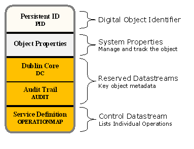
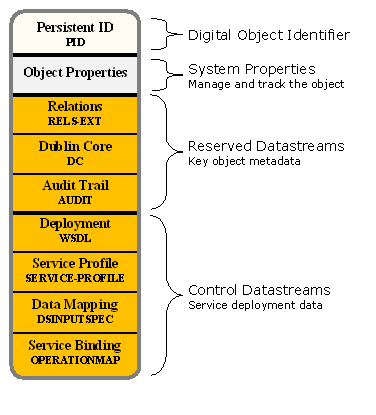

The Fedora Digital Object
Fedora defines a generic digital object model that can be used to persist and deliver the essential characteristics for many kinds of digital content including documents, images, electronic books, multi-media learning objects, datasets, metadata and many others. This digital object model is a fundamental building block of the Content Model Architecture and all other Fedora-provided functionality.The Fedora Digital Object Model
Fedora uses a "compound digital object" design which aggregates one or more content items into the same digital object. Content items can be of any format and can either be stored locally in the repository, or stored externally and just referenced by the digital object. The Fedora digital object model is simple and flexible so that many different kinds of digital objects can be created, yet the generic nature of the Fedora digital object allows all objects to be managed in a consistent manner in a Fedora repository.A good discussion of the Fedora digital object model (for Fedora 2 and prior versions) exists in a recent paper (draft) published in the International Journal of Digital Libraries. While some details of this paper have been made obsolete by the CMA (e.g. Disseminators), the core principles of the model are still part of the CMA. The Fedora digital object model is defined in XML schema language (see The Fedora Object XML - FOXML). For more information, also see the Introduction to FOXML in the Fedora System Documentation.

The basic components of a Fedora digital object are:
- PID: A persistent, unique identifier for the object.
- Object Properties: A set of system-defined descriptive properties that are necessary to manage and track the object in the repository.
- Datastream(s): The element in a Fedora digital object that represents a content item.
Datastreams
A Datastream is the element of a Fedora digital object that represents a content item. A Fedora digital object can have one or more Datastreams. Each Datastream records useful attributes about the content it represents such as the MIME-type (for Web compatibility) and, optionally, the URI identifying the content's format (from a format registry). The content represented by a Datastream is treated as an opaque bit stream; it is up to the user to determine how to interpret the content (i.e. data or metadata). The content can either be stored internally in the Fedora repository, or stored remotely (in which case Fedora holds a pointer to the content in the form of a URL). The Fedora digital object model also supports versioning of Datastream content (see the Fedora Versioning Guide for more information).Each Datastream is given a Datastream Identifier which is unigue within the digital object's scope. Fedora reserves three Datastream Identifiers for its use, "DC", "AUDIT" and "RELS-EXT". Every Fedora digital object has one "DC" (Dublin Core) Datastream by default which is used to contain metadata about the object (and will be created automatically if one is not provided). Fedora also maintains a special Datastream, "AUDIT", that records an audit trail of all changes made to the object, and can not be edited since only the system controls it. The "RELS-EXT" Datastream is primarily used to provide a consistent place to describe relationships to other digital objects. In addition, a Fedora digital object may contain any number of custom Datastreams to represent user-defined content.
Decisions about what to include in a Fedora digital object and how to configure its Datastreams are choices as you develop content for your repository. The examples in this tutorial demonstrate some common models that you may find useful as you develop your application. Different patterns of datastream designed around particular "genre" of digital object (e.g., article, book, dataset, museum image, learning object) are known as "content models" in Fedora.

The basic properties that the Fedora object model defines for a datastream are as follows:
- Datastream Identifier: an identifier for the datastream that is unique within the digital object (but not necessarily globally unique)
- State: the Datastream's state: Active, Inactive, or Deleted
- Created Date: the date/time that the Datastream was created (assigned by the repository service)
- Modified Date: the date/time that the Datastream was modified (assigned by the repository service)
- Versionable: an indicator (true/false) as to whether the repository service should version the Datastream (by default the repository versions all Datastreams)
- Label: a descriptive label for the Datastream
- MIME Type: the MIME type of the Datastream (required)
- Format Identifier: an optional format identifier for the Datastream such as emerging schemes like PRONOM and the Global Digital Format Registry (GDRF)
- Alternate Identifiers: one or more alternate identifiers for the Datastream (such identifiers could be local identifiers or global identifiers such as Handles or DOI)
- Checksum: an integrity stamp for the Datastream content which can be calculated using one of many standard algorithms (MD5, SHA-1, etc.)
- Bytestream Content: the content (as a stream resource) represented or encapsulated by the Datastream (such as a document, digital image, video, metadata record)
- Control Group: the approach used by the Datastream to represent or encapsulate the content as one of four types or control groups:
- Internal XML Content - the content is stored as XML in-line within the digital object XML file
- Managed Content - the content is stored in the repository and the digital object XML maintains an internal identifier that can be used to retrieve the content from storage
- Externally Referenced Content - the content is stored outside the repository and the digital object XML maintains a URL that can be dereferenced by the repository to retrieve the content from a remote location. While the datastream content is stored outside of the Fedora repository, at runtime, when an access request for this type of datastream is made, the Fedora repository will use this URL to get the content from its remote location, and the Fedora repository will mediate access to the content. This means that behind the scenes, Fedora will grab the content and stream in out the the client requesting the content as if it were served up directly by Fedora. This is a good way to create digital objects that point to distributed content, but still have the repository in charge of serving it up.
- Redirect Referenced Content - the content is stored outside the repository and the digital object XML maintains a URL that is used to redirect the client when an access request is made. The content is not streamed through the repository. This is beneficial when you want a digital object to have a Datastream that is stored and served by some external service, and you want the repository to get out of the way when it comes time to serve the content up. A good example is when you want a Datastream to be content that is stored and served by a streaming media server. In such a case, you would want to pass control to the media server to actually stream the content to a client (e.g., video streaming), rather than have Fedora in the middle re-streaming the content out.
Digital Object Model - Access Perspective
Below is an alternative view of a Fedora digital object that shows the object from an access perspective. The digital object contains Datastreams and a set of object properties (simplified for depiction) as described above. A set of access points are defined for the object using the methods described below. Each access point is capable of disseminating a "representation" of the digital object. A representation may be considered a defined expression of part or all of the essential characteristics of the content. In many cases, direct dissemination of a bit stream is the only required access method; in most repository products this is only supported access method. However, Fedora also supports disseminating virtual representations based on the choices of content modelers and presenters using a full range of information and processing resources. The diagram shows all the access points defined for our example object.For the access perspective, it would be best if the internal structure of digital object is ignored and treated as being encapsulated by its access points. Each access point is identified by a URI that conforms to the Fedora "info" URI scheme . These URIs can be easily converted to the URL syntax for the Fedora REST-based access service (API-A-LITE). It should be noted that Fedora provides a several protocol-based APIs to access digital objects. These protocols can be used both to access the representation and to obtain associated metadata at the same access point.

By default, Fedora creates one access point for each Datastream to use for direct dissemination of its content. The diagram shows how these access points map to the Datastreams. The example object aggregates three Datastreams: a Dublin Core metadata record, a thumbnail image, and a high resolution image. As shown, each Datastream is accessed from a separate URI.
Custom access points are created using the Content Model Architecture by defining control objects as described below. Behind the scenes, custom access points connect to services that are called on by the repository to produce representations of the object. Custom access points are capable of producing both virtual and direct representations (though they are likely to provide slower performance). Content in the Datastreams may be used as input as well as caller-provided parameters. A "virtual representation" is produced at runtime using any resource the service can access in conjunction with content generated in its code. In this example, there is one service that contains two operations, one for producing zoomable images and one for producing grayscale images. These operations both require a jpeg image as input, therefore the Datastream labeled "HIGH" is used by this service. Fedora will generate one access point for each operation defined by the service. The control objects contains enough information so that a Fedora repository can automatically mediate all interactions with the associated service. The Fedora repository uses this information to make appropriate service calls at run time to produce the virtual representation. From a client perspective this is transparent; the client just requests a dissemination from the desired access point.
Four Types of Fedora Digital Objects
Although every Fedora digital object conforms to the Fedora object model, as described above, there are four distinct types of Fedora digital objects that can be stored in a Fedora repository. The distinction between these four types is fundamental to how the Fedora repository system works. In Fedora, there are objects that store digital content entities, objects that store service descriptions, objects used to deploy services, and objects used to organize other objects.Data Object
In Fedora, a Data object is the type of object used to represent a digital content entity. Data objects are what we normally think of when we imagine a repository storing digital collections. Data objects can represent such varied entities as images, books, electronic texts, learning objects, publications, datasets, and many other entities. One or more Datastreams are used to represent the parts of the digital content. A Datastream is an XML element that describes the raw content (a bitstream or external content). In the CMA, Disseminators, a metadata construct used to represent services, are eliminated though their functionality is still provided in other ways.
The Data object, indeed all Fedora digital objects, now consists of the FOXML digital object encapsulation (foxml:digitalObject) and two fundamental XML elements: Object Properties (foxml:objectProperties) and Datastreams (foxml:datastream). The Data object is the simplest of all the specialized object types and is identical to the digital object described in the Fedora Digital Object Model section above.
Data objects can now be freely shared between Fedora repositories. If a federated identifier-resolver system, such as the Handle System™, or any authoritative name registry system is used, the Data object will have the same identifier for each copy of itself in each participating repository. Sharing Data objects while keeping the same identifier in each copy greatly simplifies replication, and enables many business processes and services that are needed for large scale repository installations integrated within the Fedora Framework. Data objects can still be shared between repositories by including both the original identifier and alternate identifiers as part of the object's metadata.Service Definition Object
In Fedora, a Service Definition object or SDef is a special type of control object used to store a model of a Service. A Service contains an integrated set of Operations that a Data object supports. In object-oriented programming terms, the SDef defines an "interface" which lists the operations that are supported but does not define exactly how each operation is performed. This is also similar to approaches used in Web (REST) programming and in SOAP Web services. In order to execute an operation you need to identify the Data object, the SDef, and the name of the Operation. Some Operations use content from Datastreams (supplied by the Data object) and, possibly, additional parameters supplied by the client program or browser requesting the execution.

Conceptually an Operation is called using the following form (the specifics vary with the actual Fedora interface being used but all will contain some form of this information):
Repository : Get : Data object PID : SDef PID : Operation Name : Optional Parameters
A SDef is a building block in the CMA that enables adding customized functionality for Data objects. Using a SDef is a way of saying "this Data object supports these operations." Essentially, a SDef defines a "behavior contract" to which one or more Data objects may "subscribe." In repositories, we usually create a large number of similar Data objects and want them all to have the same functionality. To make this approach flexible and easier to use, the CMA uses the Content Model (CModel) object (described below) to contain the model for similar Data objects. Instead of associating the SDef directly with each Data object, the relation hasService is asserted to the CModel object. By following the relation between the Data object to the CModel object, and then from the CModel object to the SDef object, we can determine what Operations the Data object can perform. Also note that a Data object (through its CModel object) may support more than one Service (by having multiple SDef relations).
SDef objects can now be freely shared between Fedora repositories. If a federated identifier-resolver system, such as the Handle System™, or any authoritative name registry system is used the SDef object will have the same identifier for each copy of itself in each participating repository. Sharing SDef objects while keeping the same identifier in each copy greatly simplifies replication, and enables many business processes and services that are needed for large scale repository installations integrated within the Fedora Framework. SDef objects can still be shared between repositories by including both the original identifier and alternate identifiers as part of the object's metadata. The best results will be gained by sharing the Data object, SDef objects, and Content Model object as a group maintaining the same original identifies. By using the CMA in this fashion, you transfer a significant unit of the data and metadata that documents the expression pattern for your intellectual work. While this is, by itself, not everything needed, it is a big step forward for creating a durable content repository.
It is worth noting that Service Definition objects conform to the basic Fedora object model. Also, they are stored in a Fedora repository just like other Fedora objects. As such, a collection of SDef objects in a repository constitutes a "registry" of Service Definitions.Service Deployment Object
The Service Deployment object is a special type of control object that describes how a specific repository will deliver the Service Operations described in a SDef for a class of Data objects described in a CModel. The SDep does not contain executable code but instead it contains information that tells the Fedora repository how and where to execute the function that the SDep represents. In the CMA, the SDep acts as a deployment object only for the specific repository in which it is ingested; each repository is free to provide functionality in a different way. For example, one Fedora repository may choose to use a Servlet and another may use a SOAP Web service to perform the same function. As another example, individual repository implementations may need to provide the functionality at different end points. Or perhaps, a specific installation may use a dynamic end point resolution mechanism to permit failover to different service providers.

Since the SDep operates only within the scope of an individual repository, the operators of that repository are free to make changes to the SDep or the functionality it represents at any time (except for temporarily making the object's services unavailable while the change is being made). This approach permits the system operators to control access to services called by the Fedora repository to institute security or policies as their organization determines. It enables Fedora-called services to be managed using the same principles and tools for the deployment of any distributed system. It also enables the system operators to reconfigure their systems quickly without having to change any part of their content except the SDep object.
The SDep stores concrete service binding metadata. A SDep uses a isDeploymentOf relation to a SDef as its way of saying "I am able to perform the service methods described by that SDef." A SDep object is related to a SDef in the sense that it defines a particular concrete implementation of the abstract operations defined in a SDef object. The SDef also uses a isContractorOf relation to a CModel as a way of saying "Use me to do the service operations for any Data objects conforming to that CModel."
A SDep object stores several forms of metadata that describe the runtime bindings for invoking service methods. The most significant of these metadata formats is service binding information encoded in the Web Services Description Language (WSDL). The Fedora repository system uses the WSDL at runtime to dispatch service method requests in fulfilling client requests for "virtual representations" of a Data object (i.e., via its Operations). This enables Fedora to talk to a variety of different services in a predictable and standard manner. A SDep also contains metadata that defines a "data contract" between the service and a class of Fedora Data objects as defined in the CModel. For the initial deployment of the CMA a simple data contract mechanism was chosen. Since the Datastream IDs are specified in the CModel and the SDep is now a deployment control object only for a specific repository, the SDep is able to uniformly bind directly to these IDs. In the future a more abstract binding mechanism may be used but this approach is simple and clear, though it may require the creation of a small number of additional SDep objects.
A major aspect of the CMA redesign is that there is no requirement that conformance to a Content Model or that referential integrity between objects be checked at ingest time. This may result in a runtime error if the repository cannot find referenced objects, interpret the Content Model or if there are any conformance problems.
It is worth noting that SDep objects conform to the basic Fedora object model. Also, they are stored in a Fedora repository just like other Fedora objects. As such, a collection of SDep objects in a repository constitutes a "registry" of service deployments that can be used with Fedora objects. In the CMA, SDep objects are not freely sharable across repositories. They represent how a specific repository implements a service. However, SDep objects can be shared if the operator of the system modifies them for local deployment. Because of this, SDep objects should not be automatically replicated between repositories without considering the affect.Content Model Object
The Content Model object or CModel is a new specialized control object introduced as part of the CMA. It acts as a container for the Content Model document which is a formal model that characterizes a class of digital objects. It can also provide a model of the relationships which are permitted, excluded, or required between groups of digital objects. All digital objects in Fedora including Data, SDef, SDep, and CModel objects are organized into classes by the CModel object. In this section, we will primarily discuss the relationship between the Data and CModel objects.
To create a class of Data objects, create a CModel object. Each Data object belonging to the class asserts the relation hasModel using the identifier of the CModel as the object of the assertion. The current CModel object contains a structural model of the Data object. Over time there will be additional elements to the Content Model document but this initial implementation is sufficient to describe the Datastreams which are required to be present in each Data object in the class. The other key relation is to the SDef objects. You can assert zero or more hasService relations in the CModel to SDef objects.
A Data object may assert a hasModel relationship to multiple CModel objects. Such a Data object should conform to all of its Content Models, containing an aggregation of all the Datastreams defined by the Content Models. If two or more Content Models define Datastreams which have the same name but different characteristics, no well-formed Data object can be constructed and likely the repository will be unable to deliver its content or services. Fedora automatically assumes that all objects conform to a system-defined "Basic Content Model." There is no need to assert a relation to this content model explicitly but, if the Data object asserts other relations, it is a good practice to make the assertion to the Basic Content Model explicit. Regardless, the repository will behave the same whether the relation is asserted or not. Along with the Basic Content Model, the repository defines a "Basic Service Definition" which supplies Operations common to all objects. One such service provides direct access to the Datastreams.
Because of the Basic Content Model and the Basic Service Definition, nothing needs to be added to a Data object if the user only wants to store and disseminate Datastreams by name. However, without an explicit Content Model you cannot validate whether the Data object is correctly formed. In the CMA, if the repository cannot find and interpret all the control objects related to a Data object, or cannot interpret the Content Model, it will issue a runtime error when the Data object is accessed. Note that the repository will always be able to able to perform basic Datastream operations because they are a part of the Basic Content Model and Basic Service Definition. Other than conformance to the rules for a properly formed digital object, there is no warning or error issued on ingest or modification of an object in the CMA.

CModel objects can now be freely shared between Fedora repositories. If a federated identifier-resolver system, such as the Handle System™, or any authoritative name registry system is used the CModel object will have the same identifier for each copy of itself in each participating repository. Sharing CModel objects while keeping the same identifier in each copy greatly simplifies replication, and enables many business processes and services that are needed for large scale repository installations integrated within the Fedora Framework. CModel objects can still be shared between repositories by including both the original identifier and alternate identifiers as part of the object's metadata. The best results will be gained by sharing the Data object, SDef objects, and CModel objects as a group maintaining the same original identifiers. By using the CMA in this fashion, you transfer a significant unit of the data and metadata that documents the expression pattern for your intellectual work. While this is, by itself, not everything needed, it is a big step forward for creating a durable content repository. Over time, Content Model languages can be developed that permit describing an ever larger portion of the essential characteristics of the content and its behaviors.
It is worth noting that Content Model objects conform to the basic Fedora object model. Also, they are stored in a Fedora repository just like other Fedora objects. As such, a collection of Content Model objects in a repository constitutes a "registry" of Content Models.